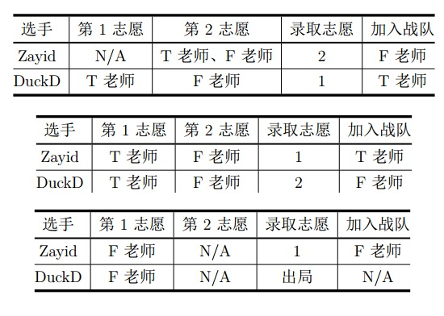

一年一度的综艺节目《中国新代码》又开始了。
Zayid从小就梦想成为一名程序员，他觉得这是一个展示自己的舞台，于是他毫不犹豫地报名了。
题目描述
轻车熟路的Zayid顺利地通过了海选，接下来的环节是导师盲选，这一阶段的规则是这样的：
总共n名参赛选手（编号从1至n）每人写出一份代码并介绍自己的梦想。接着由所有导师对这些选手进行排名。
为了避免后续的麻烦，规定不存在排名并列的情况。
同时，每名选手都将独立地填写一份志愿表，来对总共m位导师（编号从1至m）作出评价。
志愿表上包含了共m档志愿。
对于每一档志愿，选手被允许填写最多C位导师，每位导师最多被每位选手填写一次（放弃某些导师也是被允许的）。
在双方的工作都完成后，进行录取工作。
每位导师都有自己战队的人数上限，这意味着可能有部分选手的较高志愿、甚至是全部志愿无法得到满足。节目组对”
前i名的录取结果最优“作出如下定义：
前1名的录取结果最优，当且仅当第1名被其最高非空志愿录取（特别地，如果第1名没有填写志愿表，那么该选手出局）。
前i名的录取结果最优，当且仅当在前i-1名的录取结果最优的情况下：第i名被其理论可能的最高志愿录取
（特别地，如果第i名没有填写志愿表、或其所有志愿中的导师战队均已满员，那么该选手出局）。
如果一种方案满足‘‘前n名的录取结果最优’’，那么我们可以简称这种方案是最优的。
举例而言，2位导师T老师、F老师的战队人数上限分别都是1人；2位选手Zayid、DuckD分列第1、2名。
那么下面3种志愿表及其对应的最优录取结果如表中所示：

可以证明，对于上面的志愿表，对应的方案都是唯一的最优录取结果。
每个人都有一个自己的理想值si，表示第i位同学希望自己被第si或更高的志愿录取，如果没有，那么他就会非常沮丧。
现在，所有选手的志愿表和排名都已公示。巧合的是，每位选手的排名都恰好与它们的编号相同。
对于每一位选手，Zayid都想知道下面两个问题的答案：
在最优的录取方案中，他会被第几志愿录取。
在其他选手相对排名不变的情况下，至少上升多少名才能使得他不沮丧。
作为《中国新代码》的实力派代码手，Zayid当然轻松地解决了这个问题。
不过他还是想请你再算一遍，来检验自己计算的正确性。